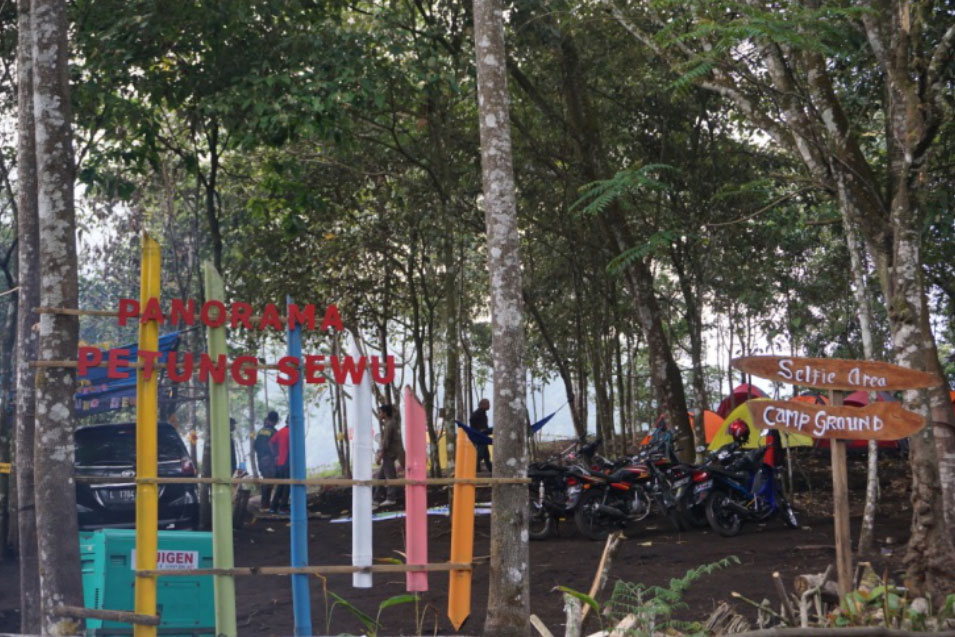
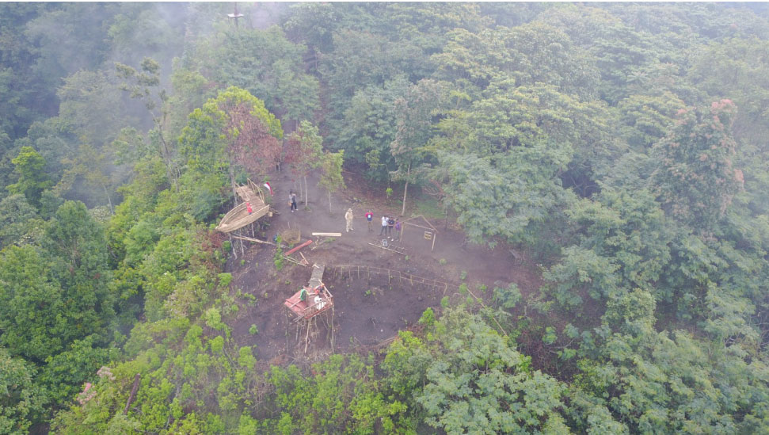
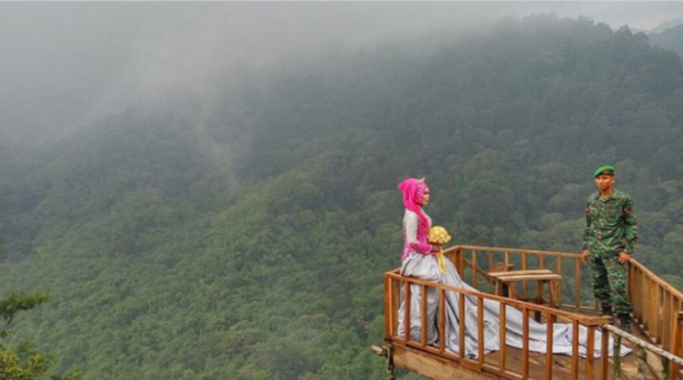
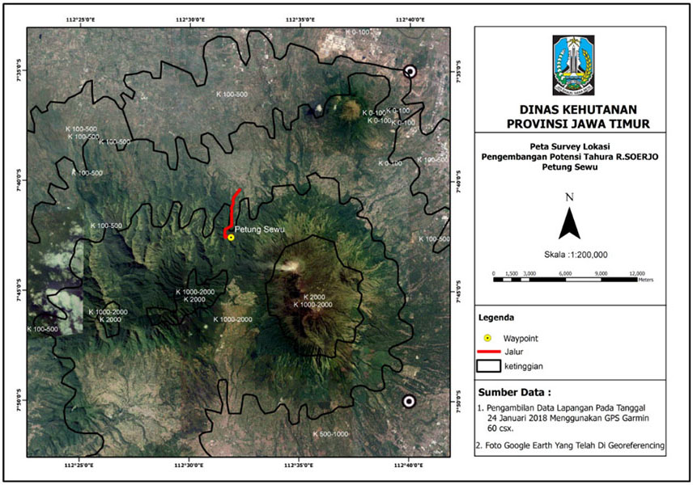

Panorama Petung Sewu merupakan wana wisata terbaru di Tahura Raden Soerjo. Lokasinya terletak di desa Pacet Kecamatan Pacet Kabupaten Mojokerto. Teman-teman yang berkunjung kesini akan diberi keindahan pemandangan alam Tahura berupa spot-spot foto berlatar belakang pegunungan dan air terjun. Pada lokasi ini juga dapat ditemui hutan bambu alami serta aliran sungai yang relatif jernih dengan ketinggian 1.500 mdpl.

Untuk menuju ke lokasi amat mudah dicapai karena letaknya yang dipinggir jalan raya Pacet – Cangar. Bisa diakses menggunakan kendaraan pribadi baik roda 2 maupun roda 4. Teman-teman yang berkunjung kesini disediakan fasilitas parkir, toilet, musholla, spot-spot foto atau selfie, camping ground dan hammock.

Adanya potensi sungai yang jernih dan hutan bambu, kedepannya akan dibangun jogging track yang melewati sungai dan hutan bambu serta akan dibangun beberapa fasilitas tambahan seperti café/resto dipinggir sungai serta permainan air seperti water tubbing atau water sliding sebagai berikut :
Pengembangan lokasi Panorama Petung Sewu direncanakan secara swakelola oleh UPT Tahura Raden Soerjo atau dengan bekerjasama dengan koperasi karena lokasi ini berada pada blok koleksi flora dan fauna.
